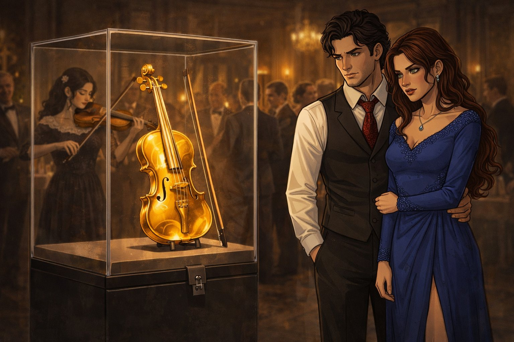

Capitolo 5: Note di Gelosia
La gelosia si insinua tra musica e silenzi, rendendo più fragile l’equilibrio tra i protagonisti.

Alessio, Laura e Maria erano seduti nel soggiorno della loro piccola casa a Málaga. L’atmosfera era tesa. Laura fissava Maria con sospetto, mentre la violinista sistemava il suo strumento su un divano.
— Chi sei davvero? — chiese Laura all’improvviso. — Perché Enrico ti ha portata da noi?
Maria alzò gli occhi, calma. — Enrico è mio zio. Mi ha insegnato tutto ciò che so sul mondo dell’arte... e degli affari speciali.
Alessio, cercando di alleggerire la situazione, sorrise. — Suona qualcosa di romantico per noi, Maria.
Maria annuì e portò il violino alla spalla. Iniziò a suonare "Por una Cabeza", un tango triste e appassionato di Carlos Gardel. Le note riempirono la stanza, creando un’atmosfera malinconica. Alessio si alzò e tese la mano a Laura.
— Balliamo? — le propose.
Laura accettò, ma mentre si muovevano al ritmo della musica, i suoi occhi non lasciavano Maria. Alessio, distratto, guardava la violinista con ammirazione. Laura sentì una fitta al cuore.
— Basta! — esplose, allontanandosi bruscamente. — Lo so che ti piace, Alessio! Non puoi nemmeno nasconderlo!
Maria interruppe il suono e posò il violino. — Non voglio essere un problema tra voi due — disse con voce ferma. — Me ne vado.
Prima che potessero risponderle, uscì dalla porta, lasciando un silenzio pesante.
Notte: Confessioni e Lacrime
Quella notte, Laura fingeva di dormire. Alessio, credendola addormentata, uscì in punta di piedi e trovò Maria seduta in giardino, sotto la luna.
— Perché quel violino è così importante per te? — le chiese, sedendosi accanto a lei.
Maria accarezzò lo strumento. — L’ho rubato anni fa a un collezionista ceco. Era ossessionato dagli strumenti rari... ma non meritava di possederli.
Alessio sorrise. — Anch’io ho rubato opere d’arte. Una volta ho preso un quadro... — iniziò a raccontare, mentre Maria ascoltava ridendo.
Dalla finestra, Laura li osservava. Vedeva Alessio gesticolare, Maria sorridere, le loro voci mescolarsi come vecchi complici. Una lacrima le scivolò sulla guancia. Si strinse le braccia al petto, sentendosi invisibile.
La luna illuminava due scene: una di complicità, l’altra di solitudine. E mentre Maria e Alessio ridevano di segreti rubati, Laura piangeva in silenzio, chiedendosi se il loro amore sarebbe sopravvissuto alla notte.